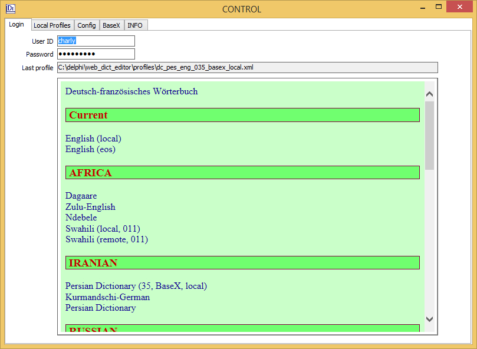
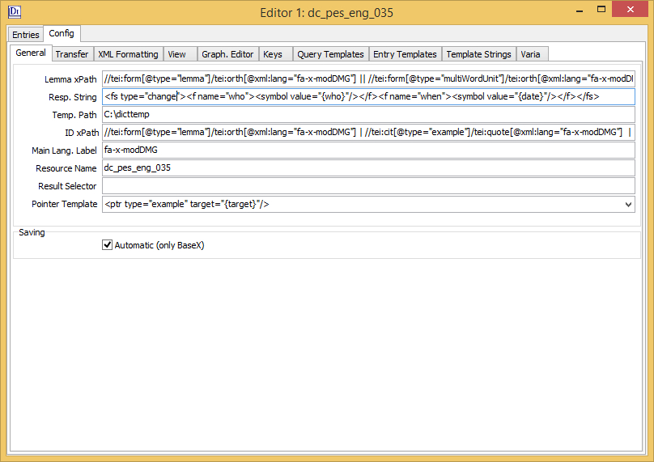
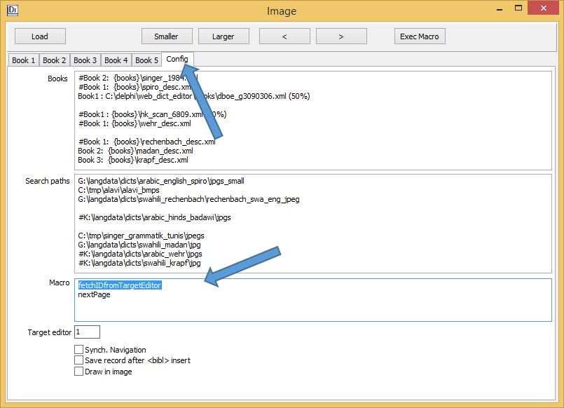
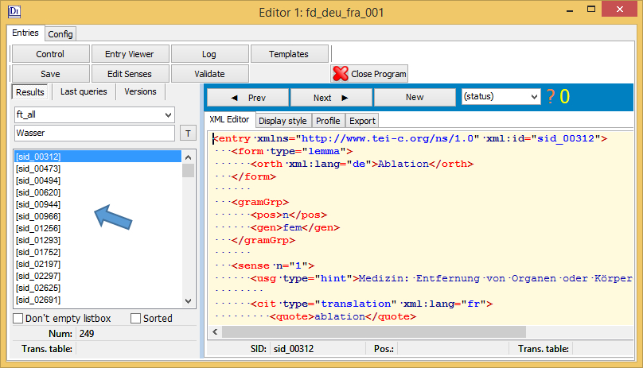

Contents
1.2 Viennese Lexicographic Editor (VLE)
1.3.1 VICAV (Vienna Corpus of Arabic Varieties )
1.3.2 TUNICO (Linguistic dynamics in the Greater Tunis Area )
2.1 Installing the Environment
3.3.3 Saving the List of Profiles
3.4.1 Quick Access Panel (QAP)
3.5.3 BaseX as Publication Platform
4.2.3 Setting-up BaseX Collections
4.2.4 Starting the Local BaseX Server
4.3 Working with Remote Dictionaries
4.4.1 Navigating Between Editors
4.7.5 Caveats and Restrictions
5.3.3 Production Metadata in the Entries
5.4.10 insertCBInNextEle(elements)
5.4.13 insertSoundDurationInLine
5.4.21 replaceStringInEntry(x,y)
5.6.6 Creating the Application
5.6.8 Access Interface in the Browser
5.8 Rebuilding the TUNICO Dictionary
5.8.1 Get the Software and Install it.
5.8.4 Create the Web Dictionary
6.1 Results are not properly displayed
6.4 Is the BaseX server running?
6.5 Create Database: HTTP/1.1 500 Internal Server Error
VLE-Docu
Charly MoerthVienna, 28.5.2017
1 Introduction
1.1 Technicalities
This documentation is work in progress. Any comments are highly welcome.
The documentation is written in TEI (P5). You can view the TEI source by clicking on this link. To see the XSL stylesheet which was used to create the output click here.
We have been working on a documentation of the encoding of some of our dictionaries in tandem to this document. Our Encoding Guidelines can be found here.
By default, the documentation is loaded from the dictGate server. The respective URL can be changed in the configuration.
The checkbox Load Local Version allows to use a stabilised local version. VLE expects this to be in {WDE}\docu.
1.2 Viennese Lexicographic Editor (VLE)
VLE is a piece of software that first came into existence as a by-product of an entirely different development activity: the creation of an interactive online learning system for university students. Thus, it was first used in a collaborative glossary editing project carried out as part of university language courses at the University of Vienna. As the tool proved to be flexible and adaptable enough, it was also put to work in other projects. The interface is built around an XML editor. The communication between the dictionary client and the server has been implemented as a RESTful web service.
VLE provides a number of special functionalities typically needed in compiling lexicographic data. From the very beginning of its development, it was designed to process standard-based lexicographic and terminological data such as LMF, TBX, RDF or TEI. VLE can automate many editing procedures. Most of these functions can be applied both to single and/or multiple entries. The program can check the structural integrity (well-formedness) of input on the fly and can validate the data against XMLSchemas.
One of the particular features of VLE is a special module optimising access to external language resources such as corpora, other dictionaries, word lists etc. Through this module, VLE eases the integration of corpus examples into dictionaries. The principal idea in preparing this module was optimizing access to digital corpora in order to allow lexicographers to glean relevant sample sentences and to integrate them into dictionary entries in a reasonably comfortable manner. The focus in this work was direct access to the data. The corpus interface of the dictionary writing application was supposed to enable lexicographers to launch corpus queries and to offer functionalities for inserting them into existing dictionary entries without using the clipboard to copy-and-paste.
1.3 Projects
VLE was developed as part of two projects: the VICAV and TUNICO projects.
1.3.1 VICAV (Vienna Corpus of Arabic Varieties )
The Vienna Corpus of Arabic Varieties was set up with two main purposes in mind: firstly, to serve as a virtual research platform targeting the particular needs of Arabic dialectology. The main concern is textual and lexicographic data. Secondly, the platform is also used as a test bed for newly developed text technological methodologies and tools.
1.3.2 TUNICO (Linguistic dynamics in the Greater Tunis Area )
The TUNICO project ran from August 2013 until July 2016. It was funded by the Austrian Science Fund (FWF; P-25706) and conducted as a joint endeavour of the University of Vienna and the Austrian Academy of Sciences. The project was aimed at getting a clearer picture of the current linguistic situation of Tunis. Methodologically, it was situated at the crossroads of variational linguistics and language technology, combining dialectological approaches with up-to-date text technological methodologies. The data and tools developed and tested in the project were meant to be beneficial for a wide range of research questions both in the field of Arabic linguistics but also beyond.
2 Quick-Start
This is a very short guide that is supposed to help you to quickly get a working environment. The sample data that can be used is in the docu/examples directory.
2.1 Installing the Environment
Step 1Download and install BaseX.
Step 2Download and install VLE.
Step 3Initialise the environment. Go to the BaseX tab and insert the path to the script that starts BaseX' database HTTP services. You have to click the Start Local Server button at least once. If the function does not find the rest.xqm in the Basex\webapp folder, it copies it there.
2.2 Import Data into BaseX
Step 4Find the sample dictionary dc_eng_de.xml in the WDE/Docu/examples folder.
Step 5Start VLE
Step 6Create a user + password for the dictionary.
Step 7Create the dictionary.
Step 8Start the indices in BaseX. VLE's default query templates assume that the database has a full-text index. In the BaseX GUI you simply open the database, open the database properties (CTRL + D), select the Full-Text tab and push the Create button.
2.3 Open a Dictionary
Step 9Make sure that the BaseX server is running.
Step 10Go to the login tab of the Main Control.
Step 11Enter the credentials you created for the dictionary (Step 7 above).
Step 12Click on English - German (Local, test).
3 Set-up and Basics
3.1 Downloading
The latest version of VLE is available on the web site of CLARIN Centre Vienna. Simply start the installation program and follow the instructions. Make sure not to install the application in a Windows programs directory. We usually install into a directory like C:/progs/WDE.
3.2 Preparing BaseX for VLE
Before you can use BaseX to store dictionaries, you have to create a special collection for managing the users.
Step 1 Start VLE
Step 2 Select tab BaseX
Step 3 Select tab DB Admin
Step 4 The default user is admin, default password is also admin.
Step 5 Push the Create New User Table button. Make sure to do this only once. Recreating this BaseX collection will erase all existing user data.

3.3 Profiles
Profiles are the configuration files associated with dictionary projects. They are XML documents which can be edited with text editors or with VLE.
3.3.1 Generalities
Profiles are stored in two places: (a) on the local machine in the profiles folder of VLE's installation folder and (b) in the server. The second option is used two share profiles among several users who need to work with the same configuration.
3.3.2 Creating a New Profile
The first thing in creating a new dictionary is creating a new profile. To do this, perform the following steps:
Step 1Go to tab Local Profiles
Step 2Select tab New Profiles
Step 3Enter the required values. Profiles are stored in XML documents.
Step 4Push the Create button.
The above settings create the profile of a German French dictionary. The new profile is then displayed in the profile editor.
The editor helps you to work on profiles. Having modified anything in the editor, you have to save these changes manually (CTRL + S).
Having created a new profile, a placeholder is inserted on top of the list of profiles. This list is stored in document profiles.xml in the directory WDE/profiles.
You should change the default label New profile label to something meaningful.
3.3.3 Saving the List of Profiles
Having edited the list of profiles, press CTRL + S to save your changes. You are automatically taken to the Login Tab which now displays the updated data.

By clicking on a link of the list of dictionaries in the Login Tab you load a local profile. Once the profile is loaded, VLE attempts to open an editor.
3.4 Basic Components
The Dictionary Editor is made up of a number of windows. When starting the program, two components appear on the screen: the Quick Access Panel and the CONTROL Form.
3.4.1 Quick Access Panel (QAP)
VLE has a modular structure which is organised in a number of windows. Each window offers particular functionalities. The Quick Access Panel is a tool that allows users to quickly bring particular components to the front.
The default position of the Quick Access Panel is the top left corner of the screen. If this space is needed by other applications, the panel can be moved with the green bar to any other position on the screen. When you restart the program, the position will be remembered.
3.4.2 Editors
Having opened dictionaries, you see a button for each editor in the first row of controls of the Quick Access Panel. Clicking on one of the buttons brings the respective editor into the foreground.
The current version allows to open six editors concurrently.
3.4.3 Entry Viewer
The Entry Viewer is a tool to visualise data, either to display representations of single entries or whole result sets.
3.4.4 Help
The Quick Access Panel also gives access to the documentation of the program which is made up of a number of TEI conformant text documents which can be accessed in the Help Window. For more details have a look at the introductary chapter Technicalities.
3.4.5 Loc. BaseX
This button starts the BaseX server on your computer, on the same machine your VLE is being run on.
To make this work, VLE needs the path to the script that starts BaseX' database HTTP services.
Usually, the BaseX installation routine puts an icon on the desktop from which you can get the right path.
3.4.6 Control Form
The Control Form is used to open dictionaries and to manage the dictionary databases.
3.4.7 Books
The Book Viewer component is a simple image viewer with an attached navigation control.
3.4.8 Text
The Text component allows to open simple text files. Its main purpose is to extract example sentences from texts, to preprocess them and then to import them into the dictionary.
3.4.9 Quick Query
The Quick Query form is a simple control that allows to work with word lists and lookup dictionaries.
3.4.10 EDITOR Forms
The EDITOR forms are the heart of the dictionary editing system. They contain the dictionary writing functionality and provide access to the lexical data. The editor looks like this.
3.5 Setting-up BaseX
There are not many freely available XML databases. We have chosen BaseX as it is very easy to installing and handle. BaseX is an XML Database engine and XPath/XQuery 3.1 Processor which includes full support for the W3C Update and Full Text extensions of the XQuery specification. It comes with a user-friendly graphical user interface which helps you to explore your XML documents. BaseX has been open source since 2005.
3.5.1 Download BaseX
You can download BaseX from this website: http://basex.org/products/download/all-downloads/.
3.5.2 Install BaseX
Installing BaseX is pretty straightforward. You simply run the Windows Installer and follow the instructions. To run BaseX you need a recent Java version.
3.5.3 BaseX as Publication Platform
To use BaseX as a web server and VLE to create web applications, create a directory BaseX\webapp\wde\static and copy the files from WDE\templates\basex into this directory as displayed the image below.
Alternatively, you can also use VLE to set up this structure (Installing the Environment, Step 3).
4 Basic Workflow Steps
4.1 Starting VLE
The easiest way to start VLE is to click on the desktop icon.
4.2 Creating a New Dictionary
There are three major steps involved in setting up a new dictionary: (1) preparing the data, (b) creating the database and (c) finally importing the data.
4.2.1 Preparing the Data
Make sure that your import TEI document complies with the basic requirements expected by the system.
- The document must contain divisions for entries. If there are examples, they should also be stored in a separate division.
- The document must contain language labels on form[type="lemma"] and div[type="examples"]/cit/quote elements.
- The document must have a header with xml:id="dictHeader".
- The document must have xml:ids.
4.2.2 Creating a Profile
To set up a new dictionary you have to first create a profile. This is explained here.
4.2.3 Setting-up BaseX Collections
If you start a new dictionary project, we strongly recommend to make use of BaseX as data server. Your BaseX instance can run on your local machine or on a remote server. VLE provides functionalities to set up the basic structures on the BaseX server.
VLE assumes the existence of five collections for every dictionary:
| Suffix | Contents | |
| Dictionary | This data is expected to be TEI conformant. The dictionary proper has no suffix. | |
| _hist | Older versions of entries | Whenever you save an entry, the previous version is stored together with a timestamp in this database. |
| _lcks | Locking information | This database is used to keep track of who is just editing a record. |
| _ind | Customised indices | This database is not needed for working on the dictionary. It is part of the publication framework and used to create field-specific preview options. |
| _profile | Profile | The information about the particular set-up of the editor is stored in a profile. Usually the profile is stored in the VLE directory. If you work in a group, it will be advisable to share the profile in which case you can store it in this database. |
4.2.4 Starting the Local BaseX Server
Before accessing the BaseX database via VLE you have to start the local BaseX server. This can be done by clicking on the desktop icon basexhttp.
Alternatively, you can also click the Windows start button and enter basexhttp.
4.2.5 Importing Data
There are several ways of getting the data into BaseX. When setting up a new dictionary, we recommend to make use of the respective VLE import functions which automatically creates the databases needed.
Step 1 Go to tab BaseX
Step 2 Select tab DB Admin.
Step 3 Fill in your admin password for the database. Having installed BaseX, the password of the default admin user is admin.
The password can be be made visible by pushing F5.
Step 4 Select the Create Dictionary tab.
Step 5 Fill in a name for the new dictionary, add the path to the import file and the profile file. You can double-click in the controls to select the files.
With larger data sets the import may take a while. The progress is being displayed in the LOG form.
When you have more than one dictionary or different language resources in your BaseX database, you should make sure that the collections have meaningful names. We have tried to start the names of dictionaries with the prefix dc_ and use ISO language labels separated by underscores.
Having set-up the collections for your dictionary, you can also make use of BaseX data import possibilities.
4.2.6 Creating an Account
The dictionary system contains a very simple user management utility. To access dictionary data a personalised account is required. The user data are stored in a BaseX database.
Step 1 Got to tab BaseX.
Step 2 Select tab Users.
Step 3 Enter a username, a password and a dictionary name.
Step 4 Press then Create user button.
Step 5 Make sure that the user was added to the database by pushing the Show Users button.
4.2.7 Deleting an Account
VLE does not allow to delete accounts. However, it is very easy to do this in the BaseX GUI.
4.3 Working with Remote Dictionaries
If you want to connect to an existing dictionary on a remote machine, you simple have to get the profile from the remote server.
Step 1 Got to tab BaseX.
Step 2 Select the tab Dictionaries.
Step 3 Push the List Collections button.
Step 4 Rightclick on the dictionary you need and select Get Profile.
To retrieve the list of collections on the server, you will need admin credentials for the server. If you only have credentials for a particular collection, carry out step 4 in the empty listbox, enter the name of the collection you want to work with and push the ENTER button.
4.4 Working with Editors
To open a new editor you simply click on a profile in the CONTROL form. You can open up to six editors in one VLE instance. You can also open several editors when working on one dictionary. This will be particularly useful when comparing entries or working with examples to be inserted in a number of entries.
Mind that editors only deal with their data. If you change data in a profile, this will only be used in the other editors after restarting the whole application. The only work-around is to copy the profile on the server from the editor where you applied the changes and getting it from there.
4.4.1 Navigating Between Editors
There are two options to move from one editor to another. You can simply click on the buttons in the Quick Access Panel.
The second option is to make use of the functions goToEditor1, goToEditor2 etc. In our dictionary projects, these functions have been associated with the keyboard shortcuts Ctrl + 1, Ctrl + 2 etc.
4.4.2 Dealing with Profiles
As we have seen in the passages above profiles can be edited in the CONTROL form. Each editor is also furnished with a tab that contains the currently activated profile. Opening a dictionary means opening an editor with a particular profile. Many items of a profile are accessible in the configuration. However, you also have direct access to all the data of the profile in the profile tab.

Make sure to manually save this data whenever you made changes. There are two ways to do this: either by pushing CTRL + S in the profile editor or by activating the context menu (right-click) and selecting Save Profile. This will save the profile in the profiles directory.
If you want to share a profile with others, you best store it on the server. Right-click in the profile editor and select Copy Profile To Server.
4.5 Querying the Database
When working on an existing dictionary you first have to find the records you want to work on. Keep in mind that you are working with a database. To create a list of entries to work on, you have to query the database for the entries you want to have. The smaller the list, the better. Unless you are working with a very small dictionary, you do not want to retrieve all entries. Creating large datasets may slow your system down.
Enter a query string in the query control of the current dictionary editor and push the Enter button.
4.5.1 Wildcards
You can use the asterisk (*) to manually truncate words to query for substrings. String-initial will usually take considerably more time, combined queries even more so.
In a BaseX based environment, you usually use .* (dot + asterisk) while in the MySQL setup a simple * is expected.
To avoid repeated typing of queries, the last queries are saved in the Last Queries tab. To repeat a query, simply click on an item.
4.5.2 Query Control
There are two query controls, a white one and a yellow one. The yellow one allows you to work with the same keyboard layout used in the main XML editor. You can switch between the two by pushing the Toggle Button.
The yellow input control is usually used when diacritics and/or special characters are needed.
Don't Empty Listbox prevents the results listbox from being emptied when a new query is started.
4.5.3 Query Templates
When working with BaseX as a data server, all your queries need to be formulated in a language called xQuery. VLE sends this query to the database and displays the result set. It is helpful to know how to modify the queries. However, you can simply reuse predefined queries.
Each dictionary is associated with a set of query templates which are used by VLE to form the queries. The set of queries used with a particular dictionary are stored in the configuration of your dictionary. You can access them in the configuration tab of the dictionary editors.
Each query template is identified by a label.
When running a query, you choose a template, VLE replaces the variables in the query and sends it to the database.
You trigger a query by entering a query term ...
... and pressing the ENTER button. The results are displayed in the listbox on the left side of the editor.
4.5.4 Editing Templates
Each template has two variables which are used by VLE: {dict} identifies the BaseX collection, and {subQuery} which contains the query string proper.
4.5.5 Fulltext Search
BaseX offers support for the W3C XQuery Full Text 1.0 Recommendation.
4.5.6 Result Sets
Usually, VLE only retrieves a string to be displayed in the listbox (mostly the lemma together with a POS label) and the ID of the retrieved items. The display strings are used to navigate the result set. You simply double-click on a particular item to retrieve it from the database to either see it or to work on it.
4.5.7 Word Lists
To reconcile word lists with data in dictionaries, you can make use of the Quick Query component. There you can load verticalised word lists which you can look-up one by one in the dictionary without having to copy the word into the query control of the dictionary editor.
4.6 New Entries
When creating new entries, you usually proceed from predefined templates. There is no need to build each entry from scratch. For many languages it makes sense to have a template for nouns, verbs, adjectives, multi-word units and examples.
4.6.1 Inserting a Template
Step 1 Click in the editor.
Step 2 Press CTRL + N. N stands for New..
CTRL + N takes you to the Entry Templates tab. When creating an entry for the first time, it can happen that entry types are not displayed in the listbox on the left side of the Entry Templates tab.
To remedy this, proceed as described below.
Step: Press F2 and then press Enter or push the Redo Names with xPath button.
Step: Make sure to save your profile after you have done this.
Step 3 Select a template from the listbox by double-clicking.
This takes the selected template, inserts it in the editor and shows the editor tab.
Step 4 The red panel on top indicates that this data has not been saved yet. Before anything else enter a lemma string.
4.6.2 Creating an ID
Step 5 Then, the most important thing is to create a unique identifier (ID) for the entry. This should always stay the same and not contain any special characters. To insert an ID press CTRL + I.
The function creating the ID creates only produces lower case output. Many special characters are normalised. The function tries to remove diacritics. The result should look like this:
Step 6 Now you do the rest of the entry. In the case of this very simple example this is just adding a tranlsation.
Step 7 In the end you save your work with CTRL + S. The entry appears in the listbox and the red bar on top disappears.
4.6.3 Editing Entry Templates
Before you really start to work on a new dictionary you will have to think about the structure of your dictionary entries. In accordance with your particular needs, you will have to modify the existing templates.
The templates are stored in the configuration of the dictionary editors. Typically, there are templates for particular word classes, multi-word-units or examples.
Having changed anything in the entry templates, you have to save the profile (CTRL + S).
4.7 Editing the Data
Except for only a few buttons that are associated with the most common functions, the XML editors are mainly controlled through short cuts. Most of these can be freely configured. The most common key assignments used in our projects are shown below. For a description of the functions associated with the keys look at the chapter Functions.
| Shortcut | VLE Function | Explanation |
| F1 | prevEntry | Go to the previous entry |
| F2 | nextEntry | Go to the next entry |
| F3 | formatEntry | This function reformats the entry being worked on. |
| F4 | saveEntry + nextEntry | Functions can also be combined. F4 saves the entry and loads the next one. |
| F6 | showTextTemplates | This function shows text templates. |
| F8 | insertTemplateString | This function inserts the last template string in the dictionary entry. |
| CTRL + I | createID | This function creates a new value for the xml:id attribute of the entry. |
| CTRL + L | loadTranslationKeys | (Un)load translation keys |
| CTRL + S | saveEntry | Save the entry |
| CTRL + F3 | browseEntry | This function performs an XSLT transformation and displays the output as HTML. |
| CTRL + F5 | insertEndTag | This function inserts the end tag of a start tag that was just entered. |
4.7.1 Saving
VLE does not automatically save your work. Whenever you changed something you have to save the data explicitly.
4.7.2 Inserting Elements
You can create elements by simply typing them into the editor. Mind that there is special function insertEndTag which insert the end tag of an element.
The usual way to insert a new element is by copying templates. These are defined in the Config tab.
Every template has to be on a separate line. When they are inserted in the entry they are automatically formatted. In the standard setup F6 gets you from the entry editor to the Template String editor.
F5 inserts the template of the line in which the caret is and moves back into the editor.
Next you should execute the function formatEntry which formats the entry with the new data. In the initial setup, this function is associated with F3. In the following illustration, you can see that the single line of the inserted string is put on several indented lines.
4.7.3 Producing Text
A useful feature of VLE is its automatic character replacement functionality. Particular keys can be assigned any Unicode characters. These assignments are defined in the Key Translations tab of the configuaration. To load and unload the key assignments the loadTranslationKeys function which in the default setup is associated with CTRL + L.
4.7.4 Examples
Usage examples can be dealt with as entries in their own right. For the encoding details, have a look at Budin/Majewski/Moerth 2012. The advantage of not having them in the sense section of entries is that examples can be reused in multiple entries.
To create an example and add it to an entry follow these steps:
4.7.5 Caveats and Restrictions
VLE does not support right-to-left editing. Arabic and Hebrew text will not be displayed in the proper way in the editor. Actually, this has not posed a major obstacle so far. In projects containing Arabic script, input has been done in transcription which subsequently was transformed automatically into Arabic script.
VLE does currently not have a built-in undo function.
4.7.6 Versioning
Together with each save command, VLE produces a copy of the record you loaded. This version is stored together with a timestamp in the database. It can be accessed as long as you do not change the ID of the record. See chapter Metadata: Versioning.
4.7.7 Visualising Entries
You can get different visualisations of your data by applying XSLT stylesheets. Working on a dictionary, HTML representations of the data can be displayed in two locations. Either they can be shown in the dictionary editor next to the XML data. The green area on the left side is a browser representation of the data on the left side.
The second option is to show the data in a detached form which allows you to move it to any convenient location on the screen.
Which option to choose, you can configure in the configuration tab of the tool.
4.7.8 Validation
Currently, only data stored in BaseX databases can be validated. As per default, tei_all.xsd is used.
4.7.9 Global transformations
The easiest way to apply global transformations to a dictionary is by making use of oXygen and to connect to the database via webDAV.
4.8 Saving Data
Reduplicate your dictionary data as often as possible and store it in a safe place. There are several ways to achieve this. The best way to keep your data safe is distributing as many copies as possible!
4.8.1 Saving Data in BaseX
You can get direct access to your dictionary data making use of the graphical user interface of BaseX.
Step 1 Open the graphical user interface of BaseX
Step 2 Open the Manage Databases dialog (CTRL + M)
Step 3 Double-click on the collection you want to save: It is displayed in the results panel of BaseX.
Step 4 From there you can save the whole collection into a single XML document.
Make use of meaningful document names like e.g. the name of the collection plus suffix indicating the data when it was saved.
Keep in mind that a dictionary is made up of several collections. To fully restore a dictionary you will need the history and the profile as well.
4.8.2 Exporting Data with VLE
All the data of a dictionary which is stored in the BaseX server can be exported into a single self-contained XML document.
Step 1 Open the export tab of the VLE dictionary editor
Step 2 Enter a file name. Per default the dictionaries are stored in the dicttemp folder which is created when you first start VLE. The path can of course be changed.
Step 3 Press the Save all Records to Single Document button.
This feature can come in handy when you want to apply changes to a great number of entries. You can simply export the data in the described manner and then reimport them.
5 Advanced Issues
5.1 Configuring the Editor
The functionalities of many features can be changed in the configuration of the editor. Having changed anything in the configuration or a profile, you have to save the profile of the dictionary project otherwise the changes will not be remembered in the next session.
The following paragraphs deal with the most important parts of the configuration.
5.1.1 General
This tab contains a number of string values which are used by the editor.

Responsibility String is used as a template in creating production metadata. Cf. Chapter Metadata.
5.1.2 XML Formatting
VLE performs simple XML formatting which is controlled through this tab. When the first checkbox is checked, no empty lines are inserted between particular elements.
5.1.3 View
In this tab you configure the appearance of VLE. You can make visible several tabs which are not there in the standard setup.
5.1.4 Key Assignments
In this part of the configuration, you can associate key combinations with particular functions of the dictionary editor.
It is also possible to write simple macros by assigning several functions to one key. The functions are separated by a comma and must be on the same line. E.g. F4=saveEntry,nextEntry.
5.1.5 Key Translations
VLE's XML editor component allows the automatic replacement of particular keys with others. You can for instance make the editor translate every A with when you are typing in an element with a particular xml:lang attribute.
5.1.6 Query Templates
These templates are used when querying the database. See chapter Querying the Database.
5.1.7 Entry Templates
These templates are used when creating new entries. See chapter New Enries.
5.1.8 Template Strings
Template strings spare the dictionary editor the effort of typing tags when compiling dictionary entries. Basic information as to what these templates are used for can be found in the chapter Working with the Data.
Template labels are short strings (usually two or three characters) which allow you to insert the string in the same line without switching to the Template String tab. When VLE detects these strings which have to start and end with a hash, it locates the respective template and replaces the label by it.
When editing the template strings, you can add a number in curly brackets at the end of the line which indicates where the cursor is supposed to be placed after inserting the string. Move the cursor to the position where you want it to be after inserting the string and push F3.
Compare the two following images:
5.2 Data Management
This chapter only deals with managing data in the BaseX environment. The solutions with relational databases are regarded as deprecated.
5.2.1 Importing Data
There are several ways to get your data into the BaseX database.
5.2.2 Statistics
Step 1Go to tab BaseX in CONTROL form.
Step 2Go to tab Dictionaries.
Step 3 The List Collections button retrieves a complete list of all collections on the server.
Step 4Select the collection on which you need information and right-click in the context menu on Get Statistics. The result of the query will be displayed in a TEI conformant encoding.
This data can be used in the header of your dictionary.
5.2.3 Dropping Collections
If you want to drop a whole dictionary, proceed as described above. Select the collection on which you need information and right-click in the context menu on Drop Collection. You will be asked twice if you really want to do this. This step is irreversible!
This function only works for dictionaries. It will try to also delete the collections with the prefixes.
5.3 Metadata
Production metadata is mainly collected in two places: (a) the teiHeader of the dictionary and (b) the lexical units (entries, examples) stored in the database.
5.3.1 The teiHeader
The teiHeader holds the main metadata about the dictionary. To learn more about teiHeaders, have a look at Chapter 2 of the TEI Guidelines. To access the teiHeader of a particular dictionary in the editor, select the query template with the label header and query with the asterisk (.*).
5.3.2 Statistical Information
In addition to the usual metadata, VLE helps to generate and store statistical information about your dictionary. To retrieve statistical information about your dictionary follow these steps:
Step 1 Go to tab Config in CONTROL form.
Step 2 Click on tab BaseX and then on tab Dictionaries.
Step 3 Click on List Collections to see all the available BaseX collections.
Step 4 Right-click and select Get Statistics in the context menu.
Step 5 Insert this data on a regular basis in the teiHeader of the dictionary.
5.3.3 Production Metadata in the Entries
VLE uses a TEI conformant tag-set to record production metadata in the entries and examples stored in the dictionary. The system is based on feature structures as defined in Chapter 18 (Feature Structures) of the TEI Guidelines. A description of this simple system can be found in Budin/Majewski/Moerth 2012.
5.3.4 Versioning
VLE supports versioning on the level of entries. Whenever an entry or a cit/quote are stored, a copy of the previous version is stored with a timestamp in the database. These records can be found in the collection with the _hist suffix.
In VLE you can access previous versions of entries by switching to the Versions tab. Open an entry in the editor an select the versions tab.
VLE shows you the previous versions. The list box displays the ID and the time stamp. You can access any of these by double-clicking on them.
It is also possible to access earlier versions through filtering the dates or IDs. The following image shows you how to see all entries saved into the history list on 10 March 2017.
5.4 Functions
Many functions of the editor are controlled through keyboard shortcuts. The key assignments are defined in the configuration which is associated with a particular dictionary. Go to tabsheet "Config" and then to tabsheet "Keys". For the details, have a look at Chapter Key assignments.
Some function expect arguments which are put in brackets, several arguments are separated by commas.
The selected functions below are listed in alphabetical order.
5.4.1 browseEntry
This function displays the currently opened entry making use of the Single Entry Stylesheet
5.4.2 checkWellformedness
This function checks the structural integrity of the XML data in the editor.
5.4.3 createElementIDs()
This function is used for recording sound files. It expects an xPath expression as parameter to select the elements which should be assigned IDs.
5.4.4 createID
This function creates an ID for an entry. The function makes use of the value of "ID xPath" in the tabsheet "General" in the configuration.
5.4.5 formatEntry
This function attempts to reformat your entry according to your configuration. It is usually associated with F3.
5.4.6 getXPath
This function determines the xPath at the current position and copies it to the clipboard. This function is typically used when working on XSL stylesheets. Mind that the function is very simple, it ignores namespaces and does not return attributes.
5.4.7 goToQuery
This function transfers the input focus to the query control.
5.4.8 goToTextEditor
This function transfers the input focus to the example extractor component.
5.4.9 increaseID
This function increases the numeric value of the current ID by one.
5.4.10 insertCBInNextEle(elements)
This function inserts text from the clipbox in the previous or next element. Several elements are separated by the pipe: insertCBInNextEle(quote|orth).
5.4.11 insertEndTag
This function inserts the end tag of the last tag in which the cursor was. Mind that the function is not able to resolve any inconsistencies you might create.
5.4.12 insertMediaElement
This function is used for recording sound files.
5.4.13 insertSoundDurationInLine
This function is used for recording sound files.
5.4.14 insertTemplateString
This function inserts a template string into a dictionary entry.
5.4.15 insertTransDictData
This function replaces the selected string with the data from the translation dictionary. It is possible to insert several items or only a single line from the lookup dictionary. Formating of the string to be inserted can be controlled through templates which should be defined in the edit control under the listbox with the results in the lookup dictionary tabsheet. To see seversal options, click in the control edit and press F2.
5.4.16 loadTranslationKeys
This function loads and unloads the translation keys. This feature is used when characters which are not part of the standard keyboard layout are needed.
5.4.17 nextEntry
This function opens the next entry in the listbox displaying the results (on the left side of the editor). It is usually associated with F2.
5.4.18 playSound
This function is used for recording sound files.
5.4.19 prevEntry
This function opens the previous entry in the listbox displaying the results. It is usually associated with F1.
5.4.20 recordSound
This function is used for recording sound files.
5.4.21 replaceStringInEntry(x,y)
This function replaces the string x by the string y in the text contained in the editor.
5.4.22 saveEntry
This function saves the currently opened entry. As per default, it is associated with the keyboard shortcut CTRL + S.
5.4.23 selectElement
This function selects the element in which the caret is currently placed.
5.4.24 showTextTemplates
This function transfers the focus to the Template String editor. In the default configuration it is associated with F6.
5.4.25 stopRecording
This function is used for recording sound files.
5.4.26 transDictLookUp
This function looks up the selected string in the translation dictionary.
5.5 Stylesheets
By making use of XSLT stylesheets, XML can be transformed into other text formats. VLE makes use of XSLT stylesheets to create various visualisations of dictionary entries. VLE's dictionary editor component provides two editors for XSL stylesheets: one for Single Entry Styles and one for a special type of result sets, the Result List Styles.
5.5.1 Single Entry Style
This editor is used to edit the XSL stylesheets used to visualise the individual entries (cf. Basic Workflow steps: Visualising your entries).
5.5.2 Result List Styles
The second editor is used to visualise result sets Visualising your entries).
5.5.3 Transform Style
XSL stylesheets can be used to transform dictionary entries. To do that you first have to make the Transform tab visible.
5.6 Web Dictionary
The latest versions of VLE build heavily on the BaseX XML database. The TEI conformant dictionaries created with VLE can easily be published through the REST interface of the BaseX database. You can publish the data being edited by VLE and stored in Basex directly on the Internet.
5.6.1 Preliminary Steps
To start publishing a digital dictionary, you need a working BaseX environment. Follow this link to get information how to set-up BaseX.
To learn how to create a dictionary, follow this link.
To learn how to set-up the required directory structure follow this link.
There are several options to populate your dictionary with data. To learn how to import existing data follow this link.
5.6.2 Application Builder
VLE can support you in setting up the web interface. As a first step, the application builder has to be made visible. Per default, it is not shown.
Step 1 Make sure that the BaseX\bin path is set correctly.
Step 2 Start the local BaseX server.
Step 3 Go to tab Config in CONTROL form.
Step 4 Check the Show App Builder tickbox. This makes an additional tab visible.
Step 5 Go to tab App Builder
5.6.3 Set Initial Values
You start creating the web interface by furnishing the Application Builder with a number of basic data.
Next, the fields to be made searchable in the interface have to be defined. Click into Fields and push F2.
If your dictionary does not have domain labels, word class data or etymologies you simply can remove the respective lines.
The target language options are created from the ISOlanguage labels on the left side. The Target Lang. Name can contain several languages separated by commas. Make sure that the corresponding field for ISO lang labels contains the same number of values.
5.6.4 Create Files
By pushing the Create Files button four documents are created:
- The HTML source
- A Javascript file
- A CSS file
- An XSLT file which is used by the RESTful interface to format the output of the BaseX database.
When pushing the buttons, four templates are loaded and adapted to the particular settings.
The fields are used to create a select/option structure in the HTML document.
5.6.5 Create Indices
Before creating the web application, indices have to be created in the BaseX database which can be used by the interface. In the BaseX database these are stored in a separate database with the suffix _ind. (Cf. Chapter Creating a New Dictionary: Setting-up BaseX Collections)
Step 1 Activate the Create Index Query tab.
Step 2 Push the Load Template button.
Step 3 Push the Create button.
Step 4Run the query in BaseX. To do this, start the browser-based database administration interface of BaseX, go to Queries, copy the whole text that starts with "declare namespace" into the query control, choose query is 'updating' and execute the query.
Alternatively, you can also start the BaseX graphical user interface, open an editor and run the script there.
Step 4 (alt.) Run basexgui.
Step 5 (alt.) Insert the XQuery which you created in Step 3 into the editor of the GUI and push the green arrow.
5.6.6 Creating the Application
No everything should be ready to save the application. The Application Builder module creates the files in the directory BaseX\webapp\wde\static and copies some necessary other files to that directory. On Windows machines this is located in C:\Program Files (x86). Each application is stored in a separate directory. In a system with several dictionaries, the file tree might like this:
To create the new WEB application simply push the Create Website button. If your WEB server is running you will see something like this:
5.6.7 Start the Server
On a local machine, you can start the server software through the basexhttp script. There should be an icon on the desktop. Click it and Bob is your uncle ;-)
You can also use the built in Loc. BaseX button on the Quick Access Panel.
5.6.8 Access Interface in the Browser
On a local machine, you access the dictionary via http://localhost:8984/dict_api/{dictdir}/{dictname}.html.
5.6.9 Reimporting Data
When using a separate publication server it will be necessary to transfer data from the production server to the publication server.
Step 1Export the dictionary into an XML document. Usually, you will have to only export a subset of released records. There is an xQuery example export_released_tei_dict__v001.xq in the WDE/Docu/examples folder.
Step 2Delete the old data. There are again several ways to do this, WebDAV is one possibility.
Step 3Transfer the new data into the database.
Step 4Update the index collection.
5.7 tokenEditor
The tokenEditor is a module that was designed to perform post-editing of token elements. It has mostly been used to to edit TEI documents with w tags, however it can work on any XML elements.
A simple introduction (token_editor__v003.pptx) can be found in VLE's docu directory.
5.7.1 Preparing tokenEditor
Start the tokenEditor by clicking on the respective button in the Quick Access Panel.
Three forms should pop up, next to each other.
The next step would be to have a look at the configuration. The most common scenario is TEI encoded documents with token elements.
5.7.2 Accessing a Corpus
The tool allows you to work accross a number of files. However, there is a limit which is determined by the memory of your computer. To work accross several files, these have to be kept concurrently in the memory of your machine.
Opening extra-large files and also closing them will usually take some time.
5.7.3 Improving your Data
5.7.4 Recording Sound
This feature was developed and used for the Damascene Dictionary.
Step 1 First you have to make the Recording Panel visible.
The editor should then look like this:
Step 2 Make sure that recording parameters are set properly. They are to be found on the Varia tab of the configuration.
If the controls are empty, push F2 to get default values.
Step 3 Configure function keys. There are several functions used to do the recording which have to be assigned values.
Step 4 Open an entry by double-clicking on an item in the results listbox.
Step 5 Assign IDs to all forms. Every form element has to have an @xml:id. Move the focus into the XML Editor and push F12 which should trigger the function createElementIDs(//form).
Step 6 Insert Media Tags. Move the cursor into each form element and push F7 (=InsertMediaElement).
Step 7 Record by pushing the Record button.
Step 8 Control the recording by pushing the Play button.
Step 9 Insert the duration value. Move the cursor into the line with {dur} and push Ctrl + D.
Step 10 Save the record.
5.7.5 Book Viewer
The Book Viewer component is capable to display JPG and BMP files. To navigate a collection of such images you need to prepare a text file which contains the metadata about the images.
To experiment with this component, we recommend to go to website of the Internet Archive. From there you can download large amounts of digitised books in form of images. The data there were created as part of many different programs and are quite heterogeneous: some image collections come in form of TIFFs, others as BMPs or JPGs.
To create the above mentioned metadata file, we provide an application which is called image_annotator.
Step 1 Start the application. You find image_annot.exe in the WDE directory.
Step 2Find the folder with the images.
Step 3 Create an empty template by pressing the Create Document button.
Having pushed this button, a form opens which contains a template with which the next steps can be performed.
Step 4 Add page numbers. With the controls xPath and Value you can assign page numbers and page descriptions. With xPath you define the element to which a particular value is to be assigned.
To add page numbers, xPath has to be //pb/@n, value is set to 1. The value is assigned from the position of the caret onwards. Check the radiobutton Inc by one.
Step 6 Set page descriptors. It is helpful to have concise indicators of the contents of a page. Typically, such information is provided by strings such as Preface, Introduction or Contents. The main body of the dictionary needs indicators that display the position inside the dictionary, normally letters of the alphabet. The xPath for the descriptions is //fw. Having finished the work the data looks like this:
Examples of this can be found in the examples folder of VLE's documentation:
Step 7 Edit the Header. The document is a TEI document. It could be used to start a transcription of the text contained in the images. One important part of the teiHeader is the sourceDesc/ab/@type="quoteTitle". It is supposed to be a short title that can be used in bibliographic references. These strings serve as templates for references to be inserted in dictionary entries.
Step 8 Save the File. Change the filename in the control on the bottom of the Metafile form.
You can navigate both in the files form and in the metadata form. Double-clicking in the files form will also display the image.
In order to read a book, i.e. to browse through the images, open the Book Viewer component in VLE.
The Book Viewer needs the path to the metadata file and the path to the images.
By pushing the Load button, the metadata file is loaded and the first page of the book displayed.
There exists a predefined function which inserts references of particular pages into dictionary entries. By double-clicking on the top panel of a book's page a reference to the respective page is inserted in the target editor.
The template for the string to be inserted is defined in the TEI header. For the details see Step 7 above.
The above described metadata files can also be manipulated in VLE. To streamline certain steps, the Book Viewer component has a Macro button which allows users to execute particular functions.

The fetchIDfromTargetEditor function retrieves the xml:id of the record in the target editor and inserts it into the definition of the currently open page. nextPage displays the next page, prevPage displays the previous page.
5.7.6 Extracting Examples
Many dictionaries contain sample sentences. The Text component helps to extract sample sentences and to import them into the dictionary. It is opened through the Text button on the Quick Access Panel.
5.8 Rebuilding the TUNICO Dictionary
This is a simple guide which takes you through one particular example. It is supposed to demonstrate how you can set up your own WEB dictionary by taking you step-by-step through the whole process. Most of the details are mentioned somewhere before in these guidelines.
5.8.1 Get the Software and Install it.
You need two basic components: the BaseX XML-Database and the Viennese Lexicographic Editor.
Step 1 First you have to download BaseX and install it.
Step 2 Next download the lexicographic editor VLE and install it.
Step 3 Prepare BaseX for use with VLE.
5.8.2 Get the Data and ...
Step 3 Go to the TUNICO website: https://tunico.acdh.oeaw.ac.at/about_dictionary.html. In the section Data, there is a link which allows you to download the XML/TEI data.
5.8.3 ... import it
Step 4 Start the Local BaseX Server.
Step 5 Copy the downloaded data to the database by following these instructions. The image below shows settings with which you can do the import.
Import File is the one you downloaded. Profile File can be found be in VLE's templates folder.
Step 6 Create a user account by specifying a user and a password.
5.8.4 Create the Web Dictionary
At this point, everything should be ready to set up the WEB dictionary.
Step 7 Follow the steps in the Application Builder.
6 Troubleshooting
This is a list of problems that cropped up recently.
6.1 Results are not properly displayed
If not properly configured, the results of a query can display unwanted elements or elements not properly formatted.
A similar scenario are results with only IDs.

This can be solved following these steps:
Step 1Go to tab Config in your editor.
Step 2Select tab General.
Step 3Set a proper Main Lang. Label. This must be the same as in your entries. For the above example the label has to be de which stands for Deutsch 'German'.
6.2 Results are implausible
If results contain items that should not be there, this may have got to do with the indexing options of the BaseX database.
6.3 Error (pos 8146)
If you get an error like the one above try the following:
Step 1 Go to tab Config in your editor. There are several configuration tabs in the program. Mind to stay in the editor!
Step 2 Select tab Transfer.
Step 3Try to change the values here. Set Request Content Type to application/xml and Request Transfer Encoding to UTF8
6.4 Is the BaseX server running?
This message can have to meenings: either the server is really not reachable or the configuration has an incorrect value for request transfer encoding.
Step 1 Go to tab Single Profile.
Step 2 Open the appropriate profile.
Step 3 Find the line <requestTransferEncoding>UTF8</requestTransferEncoding>. Remove UTF8 and save the profile (CTRL +S).
6.5 Create Database: HTTP/1.1 500 Internal Server Error
Modify the value of Request Transfer Encoding. Try to set it to utf8.